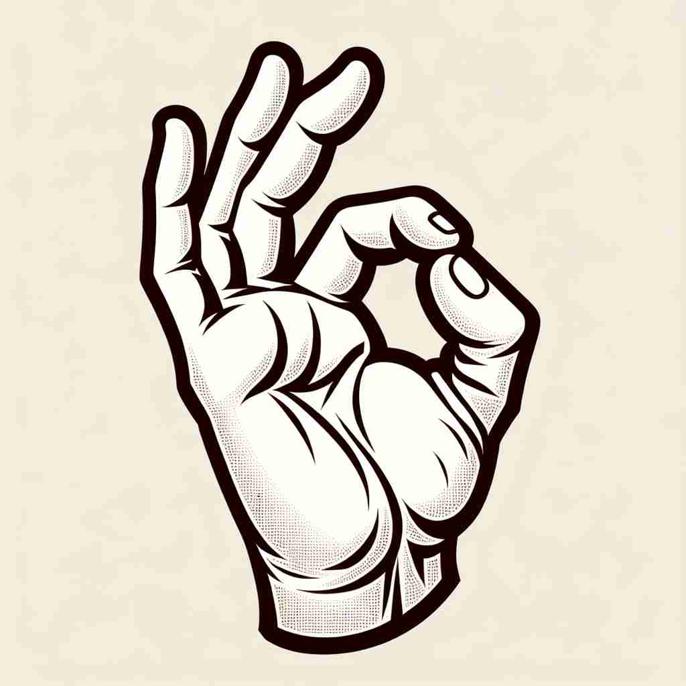

💬 The student will give a thumbs up and say OK.

💬 He said it's OK to eat the meal.
💬 The boy smiles and says 'ok' to his mom.

💬 He likes to make an ok sign when he agrees.
🔈 [o'ke]
🗝️ interjection, adj., adv., noun to express agreement or approval
🖼️ 在工作会议中，经理提出一个新的项目计划。团队成员认真听完后，一个接一个地点头，并微笑着说：'OK。'这个场景显示了他们对经理的提议表示赞同。
🔍 'OK'的核心含义是表示同意或认可。想象一个人点头说'OK'的场景，这个简单的动作涵盖了从基本同意到表示状态良好的各种含义。无论是形容词、副词还是名词用法，都源于这个表示赞同的基本概念。记住这个核心含义，就能轻松理解和记忆'OK'的多种用法。
💬 The student will give a thumbs up and say OK.
💬 He said it's OK to eat the meal.
💬 The boy smiles and says 'ok' to his mom.
💬 He likes to make an ok sign when he agrees.
🌳 'ok' 是一个常用的口语缩写，最初来源于 19 世纪美国的一种幽默拼写习惯，意为 'all correct' 的缩写形式 'oll korrect'。
💡 记忆 'ok' 时可以联想到 'all correct' 的感觉，表示一切顺利、没有问题。
🗝️ adj. satisfactory but not exceptionally good
🖼️ 在餐馆里，一位顾客品尝完新上的菜肴后，服务员前来询问感想。顾客微微皱眉，说：'味道还可以，但不算特别好。'这体现了‘ok’表示尚可的意思。
💬 The food was OK, but not great.
❓ 从表示同意延伸到表示可接受的状态
🗝️ adv. in a satisfactory manner
🖼️ 一位老师在看学生的家庭作业，虽然不是特别出色，但没有明显错误。老师在作业上写下'OK'，表示完成地还算不错。
💬 Everything's going OK at work.
❓ 基于可接受的状态，描述行为或情况的程度
🗝️ adj. to be in good health or condition
🖼️ 在医院的病房中，护士查房后对病人的家属说道：'她的恢复情况很好，健康状况OK。'这里'OK'表示病人的健康状况良好。
💬 Are you OK? You look pale.
❓ 从表示可接受延伸到表示良好状态
🗝️ noun permission or approval
🖼️ 一个十几岁的孩子想去参加朋友的生日聚会，他问父亲是否可以去。父亲考虑了一下后回答：'OK，你可以去。'这个场景展示了父亲给予许可。
💬 We're waiting for the OK from the boss.
❓ 将表示同意的行为名词化